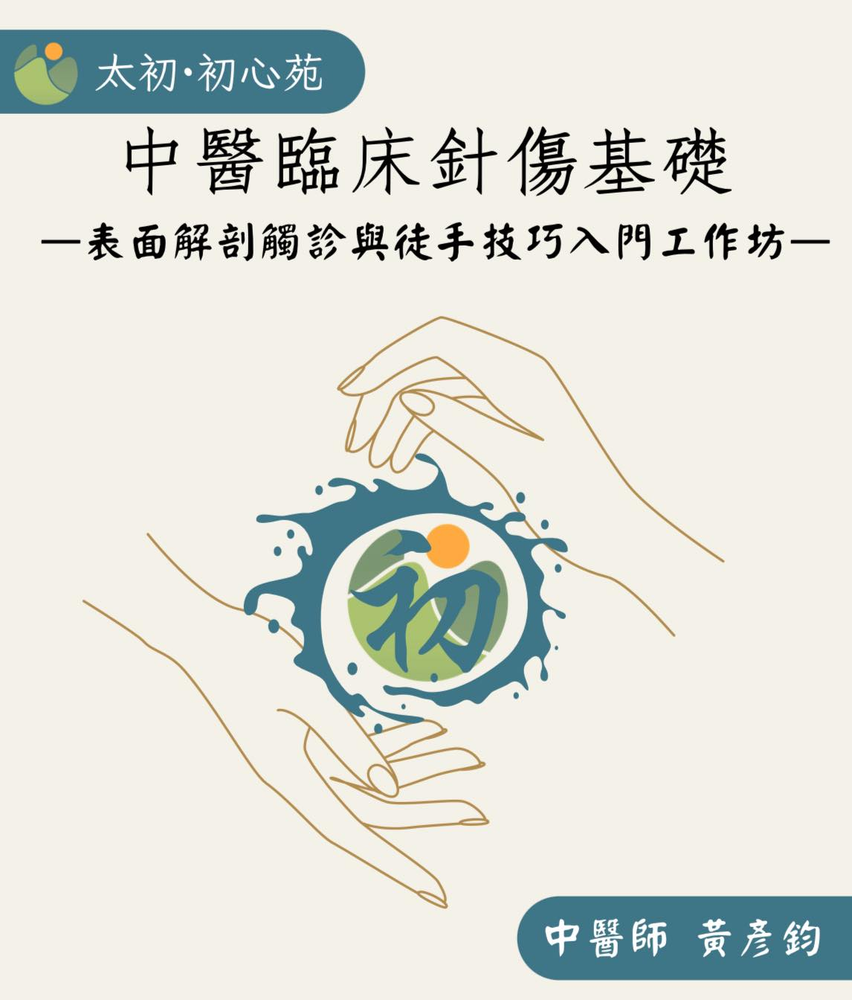

「表面解剖觸診與徒手入門」
「表面解剖觸診與徒手入門」
轉眼間，10 月悄悄邁入第三週。本月還有一個重頭戲——月底我們即將迎來表解工作坊第二梯次的開課！
為什麼要開這門課？
這些「基礎中的基礎」，真的還有人想學嗎？
在這個線上與實體課程百花齊放的時代，只要能有機會精進自己、拓寬視野，他們從不手軟。中醫所涉獵的範圍極為廣泛，想要站穩腳步，光靠熱情還不夠，更需要打下紮實的根基。
這些年來，從學生時代到臨床之路，一路摸索、跌撞前行，參與過不少課程與訓練。在針傷與徒手技術的領域，我投入的時間與心力最多。還記得剛畢業時總是滿懷期待地上課，課後也常興奮地覺得：「我懂了！我抓到這一招了！」
但回到診間實作，卻常常事與願違。明明課堂上老師示範得頭頭是道，手法變化與技巧展示令人驚嘆，自己操作起來卻總是力不從心，效果猶如擲銅板般，似乎再拚運氣。
為什麼學了卻用不出來？
為什麼看起來懂了，卻始終差那麼一點？
直到不斷地反覆練習、沈澱、反思，我才真正體會——問題並不出在「學得不夠」，而是少了「打底」。那個容易被忽略、卻又關鍵無比的基礎能力，就是：人體解剖學與表面觸診能力！
能站上講台、開課教學的老師們，無不是在自己的領域深耕多年的佼佼者，他們的經驗與成就令人敬佩。然而，在課堂的時間限制中，有時這些基礎可能被跳過，也可能是老師們已經走得太遠，忘記當初我們初學者的掙扎。結果就形成了技術傳承上的落差——學生無法精準接收老師的技術，往往歸咎於自己資質不足或努力不夠。
於是入室入門，磕頭拜師，投入一年兩年甚至數年的光陰，期待有朝一日也能登堂入室。但在這個資訊爆炸、資源隨處可得的年代，學習方式與節奏早已不同以往——或許該換一個方式學習。
而這也是我當初設計表解工作坊的一個初心念想，希望用最有效率的方式，補上這一塊被忽視已久的基礎能力缺口。
精湛的技術令人神往，但踏實的基礎才是通往技術殿堂的第一步。想要運用自如，從容面對臨床挑戰，就必須先穩穩地踏上這個第一階梯——人體表面解剖與觸診。
當你掌握了這張「身體的地圖」，再看臨床、再學技術，整個風景都會變得更加清晰而有條理。
醫學的世界永遠不缺高手與神人，永遠有值得學習的對象。學如逆水行舟，不進則退，臨床與人生的路上，前進，才是唯一方向。
一個人可以走得快，但一群人才能走得遠。
真的感謝當年肌筋膜脈學中醫應用以正學長的引導與醍醐灌頂，能這樣一路走來真的很幸運😊😊😊
學習之路無止盡，
歡迎你一起加入我們，一起探索「表面解剖觸診與徒手入門」的世界！
（報名表單在一樓⬇️）
#表面解剖觸診與徒手入門第四梯
中醫師 黃彥鈞
